Weight-Tying & Architecture
DeepIntro
Fully Connected Layers
Every neuron connects to every input
Modules
Simple chunks of neural net.
One or more fully-connected layers.
Weight-Tying
Use copies of one neuron in multiple places.
Like functions in programming.
Interesting Architectures
Weight-tying is the fundamental trick that allows us to build interesting neural network architectures.
Convolutional Neural Networks
One Dimensional Input

(eg. Audio)
A Fully Connected Model

One Dimensional Conv Nets

Exploit a symmetry in the features it is useful to look at.
One Dimensional Conv Nets

Looking at 3 patches.
One Dimensional Conv Nets

We can stack these layers.
Max Pooling

Zoom out.

Two-Dimensional Conv Nets
One Convolutional Layer

Two Convolutional Layers

Two Conv Layers with Max Pooling Layer

Inside A
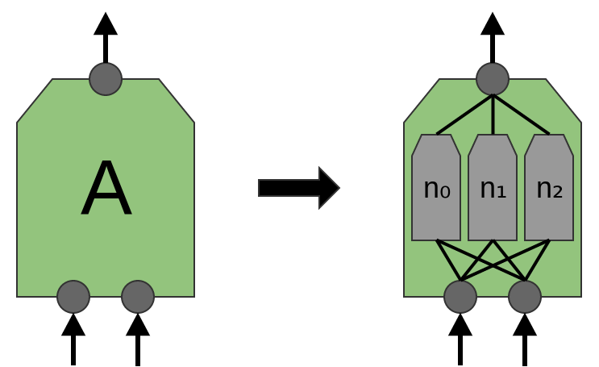
In a normal convolutional layer.
Inside A (Network In Network)

In an "MLP conv layer" or "network in network" model.
Example: Krizhevsky
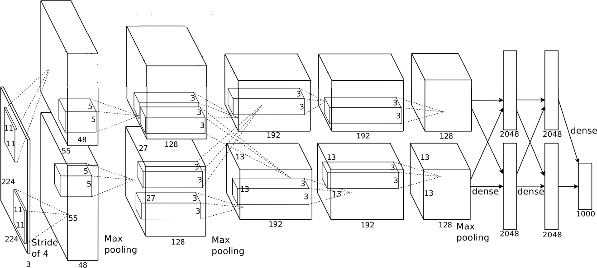
Lots of ingredients to make this work!
Example: Krizhevsky
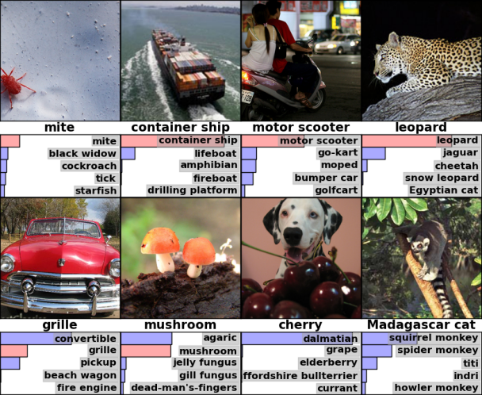
Kirzhevksy, et al. (2012); 85% top-5 accuracy
Example: Inception
96% top-5 accuracy
Recurrent Neural Networks
Recurrent Neural Networks
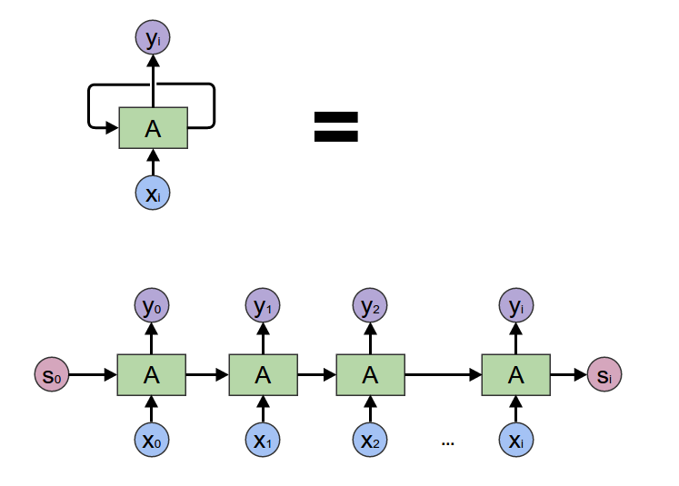
RNNs are tricky!
More in later sessions.
Generating RNNs

Example: Caption Generation
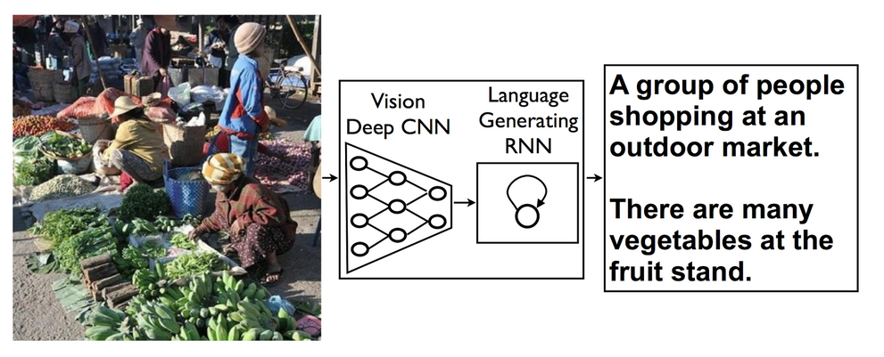
Vinyals, et al. (2014)
Encoding RNNs

Example: Translation
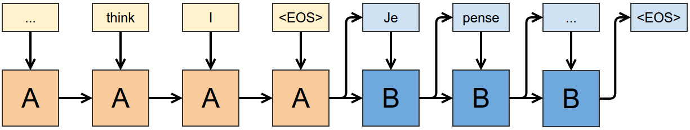
Sutskever, et al. (2014)
Stacked RNNs
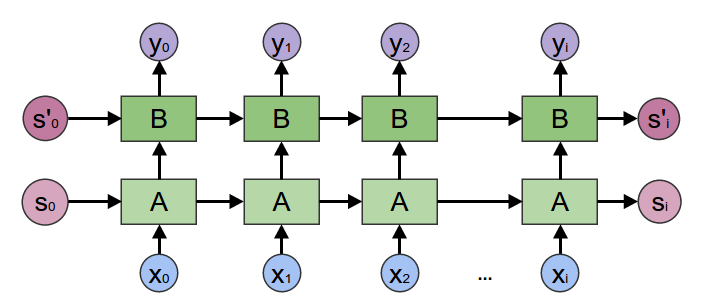
Stacked RNNs (reversed layer)
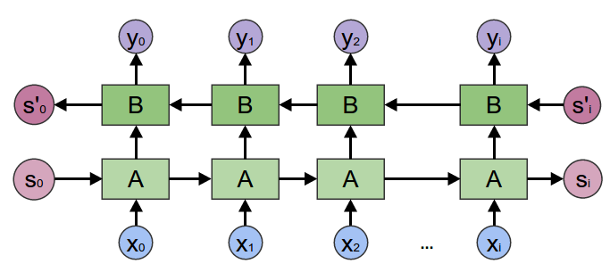
Bidirectional RNNs

Example: DeepSpeech
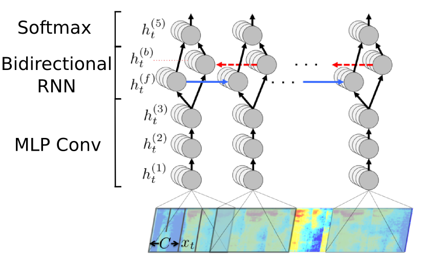
(Hannun,et al. (2014))
Tree Nets!
"Recursive Neural Networks"
Recursive instead of recurrent.
Everyone mixes up the two words. A bunch of people are advocating for calling them "Tree Nets" instead.
Tree Nets act on Trees
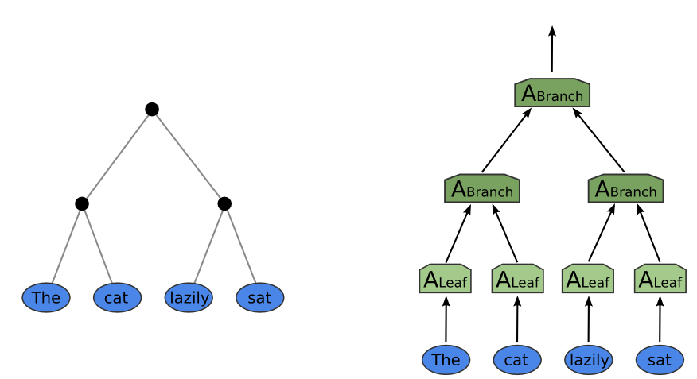
Different for Different Trees

Example: Sentiment Analysis
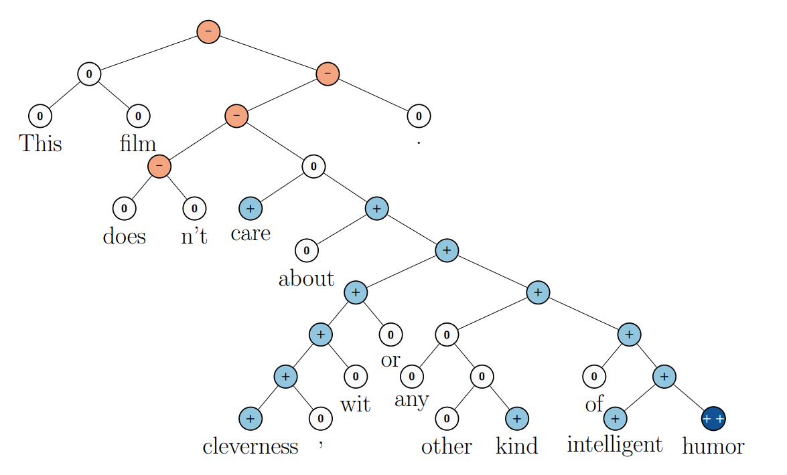
Socher, et al. (2013)
In 3 Dimensions

Deep Tree Nets
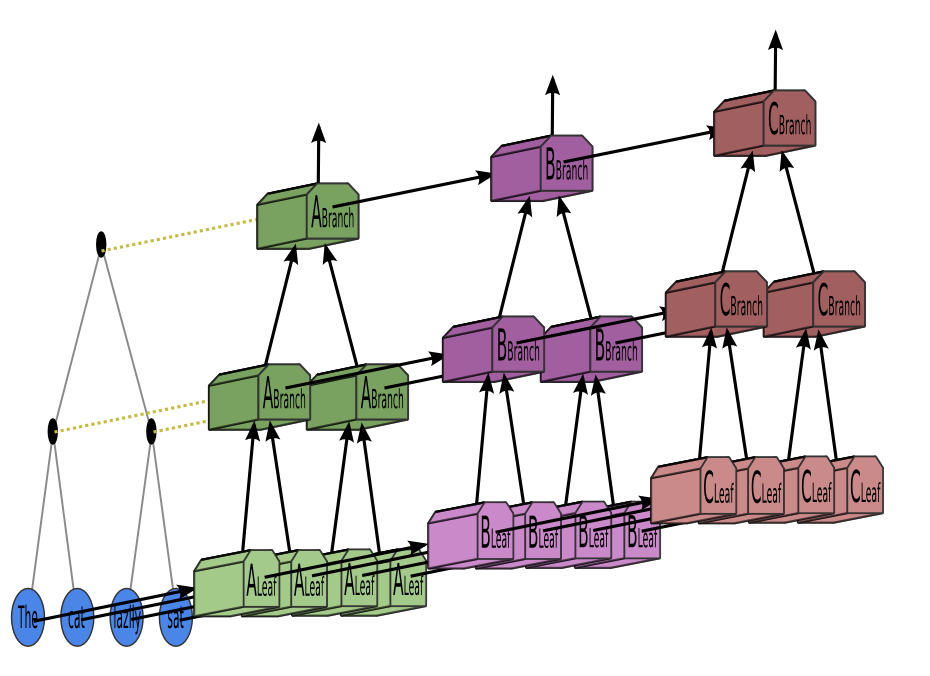
Embeddings
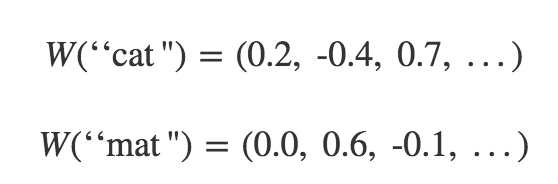

(Turian, et al. 2010)

(Colbert et al. 2011)
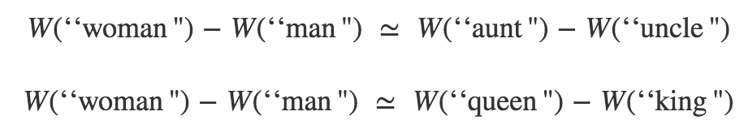
(Colbert et al. 2011)

(Mikolov et al. 2013)

(Mikolov et al. 2013)